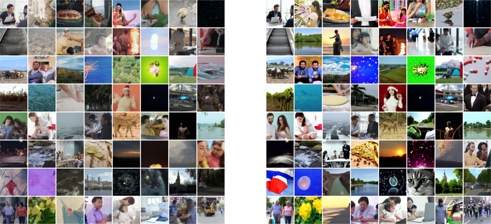

Video Diffusion Models have recently been producing high quality results in image generation and audiogeneration. They show that high quality videos can be generated using essentially the standard formulation of the Gaussian diffusion model, with little modification other than straightforward architectural changes to accommodate video data within the memory constraints of deep learning accelerators. They present the first results on a large-scale video generation task, as well as state-of-the-art results on an established unconditional video generation benchmark.
 The forward process for generation can be reduced to learning to denoise zt into an estimate ˆxθ(zt, λt) for all t. This reduction of generation to denoising can be justifieded as optimizing a weighted variational lower bound on the data log likelihood under the diffusion-model, or as a form of denoised score matching. To sample from the model, they use the discrete time ancestral sampler.
The standard architecture for ˆxθ in an image diffusion model is a U-Net, which is a neural-net architecture constructed as a spatial downsampling pass. They propose to extend this model architecture to video data, given by a block of a number of frames. The attention in each block remains as attention over space; i.e., the first axis is treated as a batch axis. They modify the image model architecture by changing each 2D convolution into a space-only 3D convolutions.
When they tried the replacement method to conditional sampling, they found it to not work well for the video models. Although samples xb looked good in isolation, they were often not coherent with xa. They instead approximate it using a Gaussian of the form q(xa|zt) to approximate it. They empirically investigate this method in Section 4.4.4. The gradient method also extends to the case of spatial interpolation (or super-resolution), in which the mean squared error loss is imposed on a downsampled version of the model.
The benchmark consists of short clips of people performing one of 101 activities. They model short segments of 16 frames from this dataset, downsampled to a spatial resolution of 64x64. In Table 1 they present perceptual quality scores for videos generated by the model. They compare against methods from the literature, finding that the method stronglyimproves upon the previous state-of-the-art. They use the C3D model as implemented at GitHub.
Text-conditioned video samples from a cascade of two models. First samples are generated from a 16x64x64 frameskip 4 model. Then those samples are treated as ground truth for simultaneous super-resolution and autoregressive extension to 64x128x128. Both models are conditioned on the text prompt. In this figure, low resolution frames, and high resolution frames are visualized in sequence. For example, the video was generated using a 9x128 x128 framekip 1 model.
The C3D model internally resizes the input data to 112x112 resolution, so perceptual scores are approximately comparable even when the data is sampled at a different resolution originally. The Inception Score they calculate for real data (≈ 60) is consistent with that reported by. They report a higher real data Inception score of ≈ 90 for data sampled at 128x128 resolution. Table 2 reports results for an experiment on text-conditioned 16x64x64 videos, where they consider training on an additional 0, 4, or 8 independent image frames per video.
Table 3 reports results that verify the effectiveness of classifier-free guidance on text-to-video generation. Table 3 shows that there is clear improvement in the Inception Score-like metrics with higher Inception Scores. Table 4.2 shows that classi.-free guidance is effective on text to video generation. Metrics are discussed in Section 4.3.2 of Table 3. Table 5 shows that the effectiveness and effectiveness of the guidance has been verified.
Figure 3 shows the effect of classifier-free guidance on a text-conditioned video model. Figure 4 shows the samples of the gradient method for conditional sampling compared to the replace-generation method (Section 3.1) for the purposes of generating long samples in a block-autoregressive (Section 4.4) video extension for longer sequences. Table 4 shows that the proposed method indeed improves over the replacement method in terms of perceptual quality scores. Figure 2 shows samples of using the gradient method to simultaneously condition on low frequency, low resolution videos while extending temporally at a high resolution.
The replacement method suffers from a lack of temporal coherence, unlike the gradient method. They have shown that with straightforward extensions of conventional U-Net architectures for 2D image modeling to 3D space-time, one can learn effective generative models for video data. This includes unconditional models and text-conditioned models. They also introduced a new gradient conditioning method for unconditional diffusion models that outperforms existing replacement or imputation methods. This method can generate longsequences using either frame interpolation (or temporal super-resolution) or extrapolation in an auto-resolution.